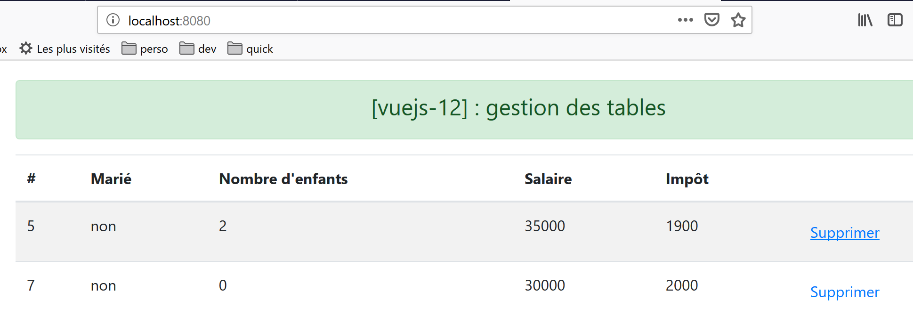

14. projet [vuejs-12] : gestion des tables HTML
L’arborescence du projet [vuejs-12] est la suivante :

14.1. Le script principal [main.js]
Le script principal redevient ce qu’il était dans les premiers projets :
// imports
import Vue from 'vue'
import App from './App.vue'
// plugins
import BootstrapVue from 'bootstrap-vue'
Vue.use(BootstrapVue);
// bootstrap
import 'bootstrap/dist/css/bootstrap.css'
import 'bootstrap-vue/dist/bootstrap-vue.css'
// configuration
Vue.config.productionTip = false
// instanciation projet [App]
new Vue({
name: "app",
render: h => h(App),
}).$mount('#app')
14.2. La vue principale [App]
Le code de la vue principale [App] est le suivant :
<template>
<div class="container">
<b-card>
<!-- message -->
<b-alert show variant="success" align="center">
<h4>[vuejs-12] : gestion des tables</h4>
</b-alert>
<!-- composant Table -->
<Table @supprimerLigne="supprimerLigne" :lignes="lignes" @rechargerListe="rechargerListe" />
</b-card>
</div>
</template>
<script>
import Table from "./components/Table";
export default {
// nom
name: "app",
// composants utilisés
components: {
Table
},
// état interne
data() {
return {
// liste des simulations
lignes: [
{ id: 3, marié: "oui", enfants: 2, salaire: 35000, impôt: 1200 },
{ id: 5, marié: "non", enfants: 2, salaire: 35000, impôt: 1900 },
{ id: 7, marié: "non", enfants: 0, salaire: 30000, impôt: 2000 }
]
};
},
// méthodes
methods: {
// suppression d'une ligne
supprimerLigne(index) {
// eslint-disable-next-line
console.log("App supprimerLigne", index);
// suppression ligne à la position [index]
this.lignes.splice(index, 1);
},
// rechargement de la table des lignes
rechargerListe() {
// eslint-disable-next-line
console.log("App rechargerListe");
// on régénère la liste des lignes
this.lignes = [
{ id: 3, marié: "oui", enfants: 2, salaire: 35000, impôt: 1200 },
{ id: 5, marié: "non", enfants: 2, salaire: 35000, impôt: 1900 },
{ id: 7, marié: "non", enfants: 0, salaire: 30000, impôt: 2000 }
];
}
}
};
</script>
Commentaires
- la vue principale affiche un composant [Table] (lignes 9, 15, 21) ;
- ligne 9 : le composant [Table] admet le paramètre [:lignes] qui représente les lignes à afficher dans une table HTML. Ces lignes sont définies par les lignes 27-31 du code ;
- ligne 9 : le composant [Table]est susceptible d’émettre deux événements :
- [supprimerLigne] : pour supprimer une ligne dont on donne l’index (ligne 38) ;
- [rechargerListe] : pour régénérer la liste des lignes 27-31. En effet, nous allons voir que l’utilisateur peut supprimer certaines des lignes affichées ;
- lignes 38-43 : la méthode chargée de gérer l’événement [supprimerLigne]. Elle reçoit en paramètre l’index de la ligne à supprimer ;
- lignes 45-54 : la méthode chargée de gérer l’événement [rechargerListe]. En modifiant l’attribut [lignes] de la ligne 27, on provoque la mise à jour du composant [Table] de la ligne 9, puisqu’il a un paramètre [:lignes="lignes"] ;
14.3. Le composant [Table]
Le composant [Table] est le suivant :
<template>
<div>
<!-- liste vide -->
<template v-if="lignes.length==0">
<b-alert show variant="warning">
<h4>Votre liste de simulations est vide</h4>
</b-alert>
<!-- bouton de rechargement-->
<b-button variant="primary" @click="rechargerListe">Recharger la liste</b-button>
</template>
<!-- liste non vide-->
<template v-if="lignes.length!=0">
<b-alert show variant="primary" v-if="lignes.length==0">
<h4>Liste de vos simulations</h4>
</b-alert>
<!-- tableau des simulations -->
<b-table striped hover responsive :items="lignes" :fields="fields">
<template v-slot:cell(action)="row">
<b-button variant="link" @click="supprimerLigne(row.index)">Supprimer</b-button>
</template>
</b-table>
</template>
</div>
</template>
<script>
export default {
// propriétés
props: {
lignes: {
type: Array
}
},
// état interne
data() {
return {
fields: [
{ label: "#", key: "id" },
{ label: "Marié", key: "marié" },
{ label: "Nombre d'enfants", key: "enfants" },
{ label: "Salaire", key: "salaire" },
{ label: "Impôt", key: "impôt" },
{ label: "", key: "action" }
]
};
},
// méthodes
methods: {
// suppression d'une ligne
supprimerLigne(index) {
// eslint-disable-next-line
console.log("Table supprimerLigne", index);
// on passe l'information au composant parent
this.$emit("supprimerLigne", index);
},
// rechargement de la liste affichée
rechargerListe() {
// eslint-disable-next-line
console.log("Table rechargerListe");
// on émet un événement vers le composant parent
this.$emit("rechargerListe");
}
}
};
</script>
Commentaires
Ce composant a deux états :
- il affiche une liste dans un tableau HTML ;
- ou bien un message indiquant que la liste à afficher est vide ;
Le 1er état est affiché si la condition [lignes.length!=0] est vérifiée (ligne 12) :

Le second est affiché si la condition [lignes.length==0] est vérifiée (ligne 4).

- [lignes] est un paramètre d’entrée du composant (lignes 29-33) ;
- lignes 4-10 : au lieu d’introduire un bloc de code avec une balise <div>, on a ici utilisé une balise <template>. la différence entre les deux est que la balise <template> n’est pas insérée dans le code HTML généré ;
- ligne 9 : lorsque la liste affichée par la table HTML est vide, un bouton propose de la régénérer. Lorsqu’on clique sur ce bouton, la méthode [rechargerListe] des lignes 57-62 est exécutée. Celle-ci se contente d’émettre vers le composant parent l’événement [rechargerListe] qui demande au parent de régénérer la liste affichée par la table HTML ;
- lignes 12-22 : le code affiché lorsque la liste à afficher n’est pas vide ;
- ligne 17 : la balise <b-table> est la balise qui génère une table HTML. Les attributs utilisés ici sont les suivants :
- [striped] : la couleur de fond des lignes alterne. Il y a une couleur pour les lignes paires et une autre pour les lignes impaires. Cela améliore la visibilité ;
- [hover] : la ligne sur laquelle on passe la souris change de couleur ;
- [responsive] : la taille de la table s’adapte à l’écran qui l’affiche ;
- [:items] : le tableau des éléments à afficher. Ici le tableau [lignes] passé en paramètre au composant (lignes 30-32) ;
- [:fields] : un tableau définissant la mise en page de la table HTML (lignes 37-44) ;
- chaque élément du tableau [fields] définit une colonne de la table HTML ;
- [label] : désigne le titre de la colonne ;
- [key] : désigne le contenu de la colonne ;
- ligne 38 : définit la colonne 0 de la table HTML :
- [#] : est le titre de la colonne ;
- [id] : est son contenu. C’est le champ [id] de la ligne affichée qui remplira la colonne 0 ;
- ligne 39 : définit la colonne 1 de la table HTML :
- [Marié] : est le titre de la colonne ;
- [marié] : est son contenu. C’est le champ [marié] de la ligne affichée qui remplira la colonne 0 ;
- ligne 43 : définit la dernière colonne de la table HTML :
- la colonne n’a pas de titre ;
- son contenu est défini par un champ [action], un champ qui n’existe pas dans les lignes affichées. Cette clé est référencée ligne 18 du [template]. La clé est donc utilisée ici uniquement pour identifier une colonne ;
- lignes 18-20 : ce code sert à définir la dernière colonne de la table HTML, celle de clé [action] :
<template v-slot:cell(action)="row">
La syntaxe [v-slot:cell(action)] désigne la colonne de clé [action]. Cette syntaxe permet de définir une colonne lorsque la syntaxe du tableau [fields] n’est pas suffisante pour la décrire. Ici nous voulons que la dernière colonne contienne un lien permettant de supprimer une ligne de la table HTML :

Dans la syntaxe [<template v-slot:cell(action)="row">], le nom [row] désigne la ligne de la table. On peut utiliser le nom que l’on veut. On aurait pu écrire [<template v-slot:cell(action)="ligne">] ;
- ligne 19 : un bouton <b-button> affiché comme un lien [variant=’link’]. Un clic sur ce lien provoque l’exécution de la méthode [supprimerLigne(row.index)]. Ici [row] est le nom donné à la ligne de la table HTML, ligne 18 du code ;
- lignes 50-55 : la méthode [supprimerLigne] ;
- ligne 54 : on émet l’événement [supprimerLigne] vers le composant parent accompagné du n° de la ligne à supprimer ;
- lignes 57-62 : la méthode [rechargerListe] ;
- ligne 61 : on émet l’événement [rechargerListe] vers le composant parent ;
14.4. Exécution du projet

La 1ère vue affichée est la suivante :

Après avoir supprimé la ligne 1 [1], la vue devient la suivante :

Après avoir supprimé toutes les lignes :

Après avoir cliqué sur le bouton [2], on obtient de nouveau la liste :